Geography
China's vast and diverse territory endows the country with some of the most beautiful natural scenery on earth. Its diverse natural beauty is as impressive as its splendid culture.
 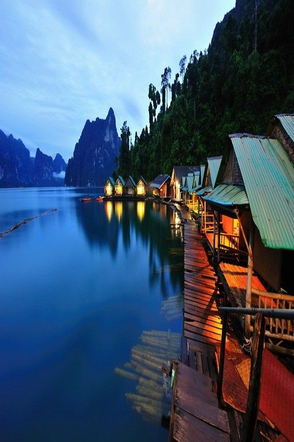
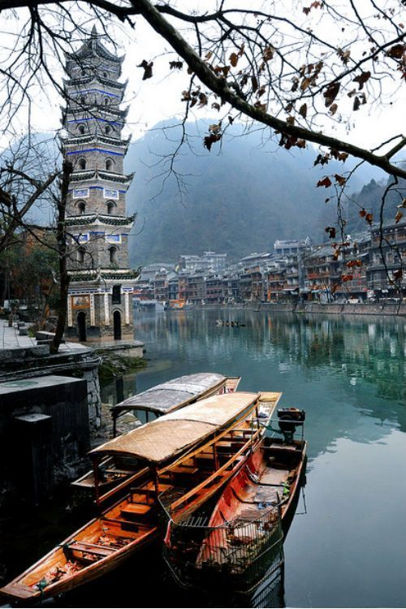
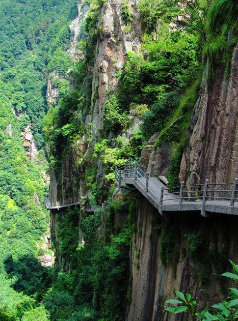
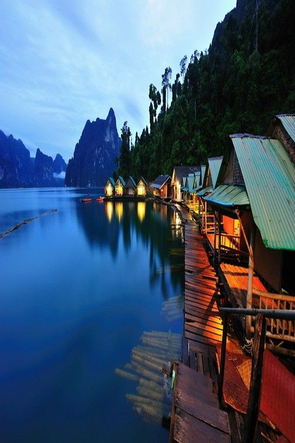
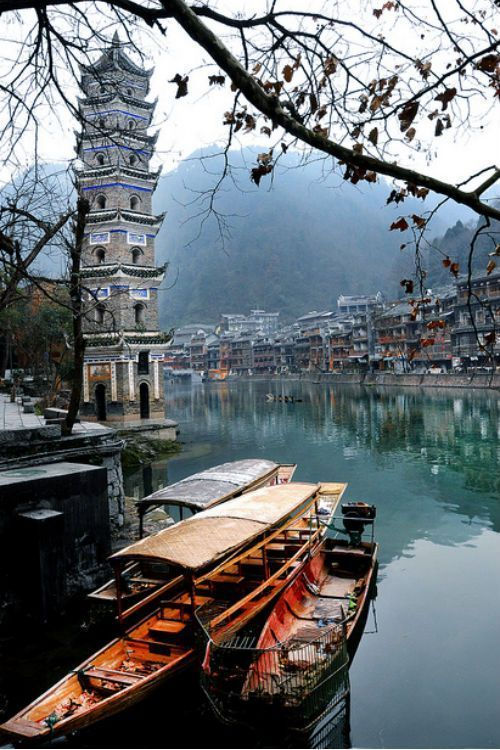
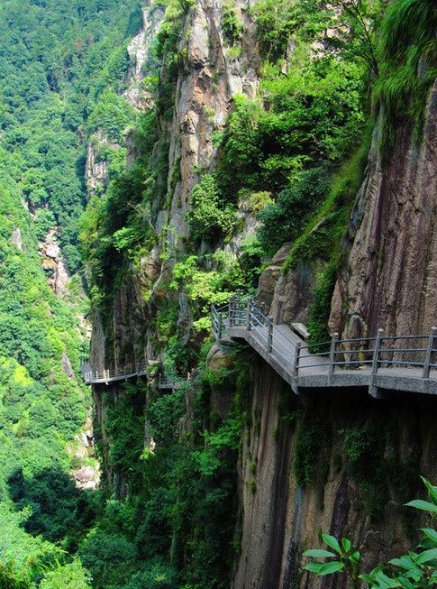
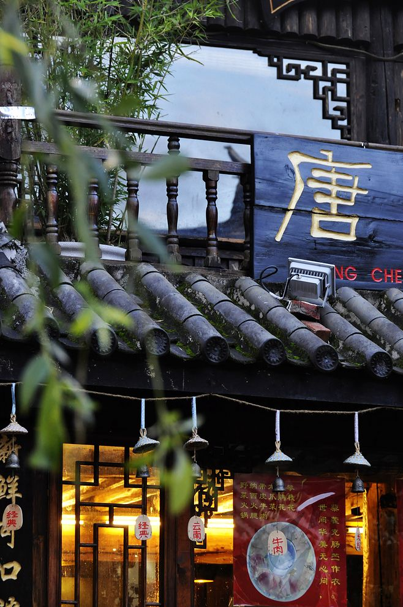
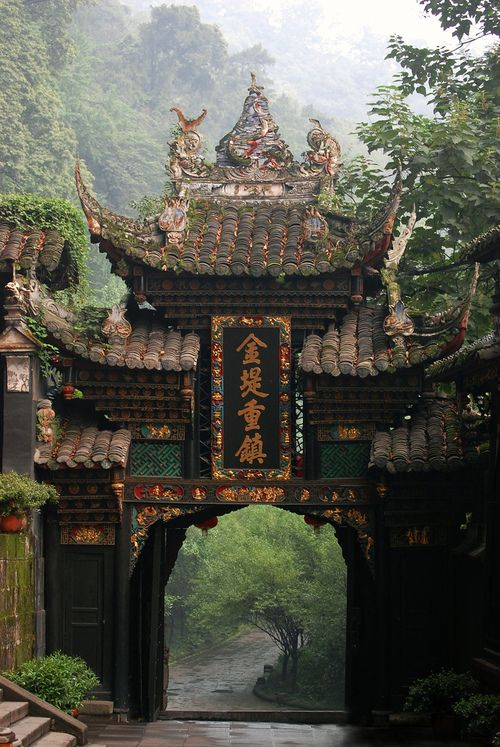

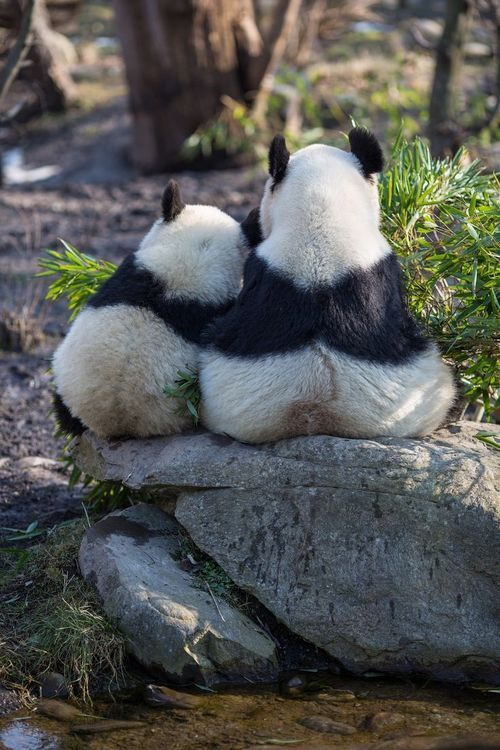
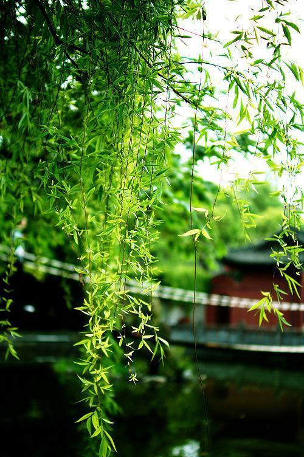
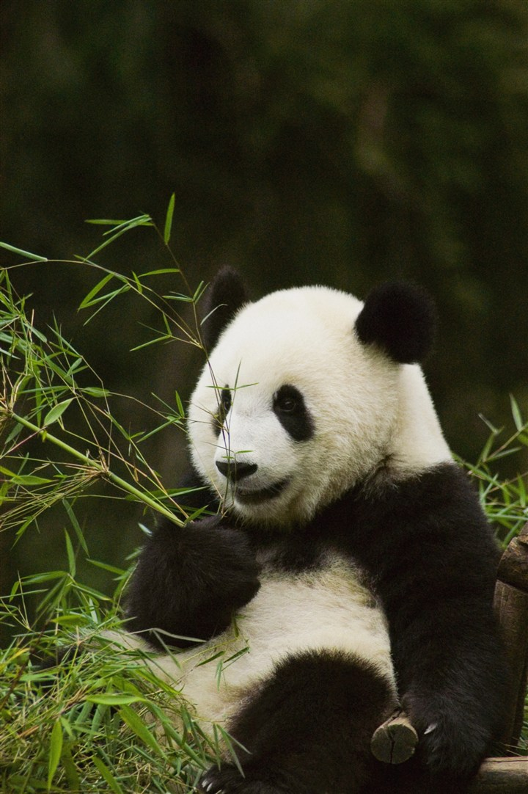
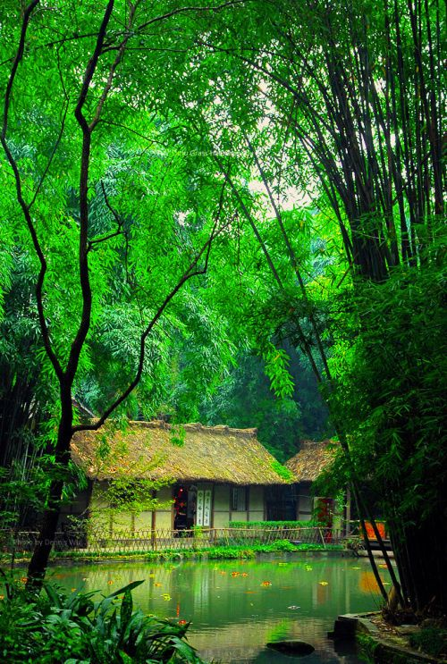